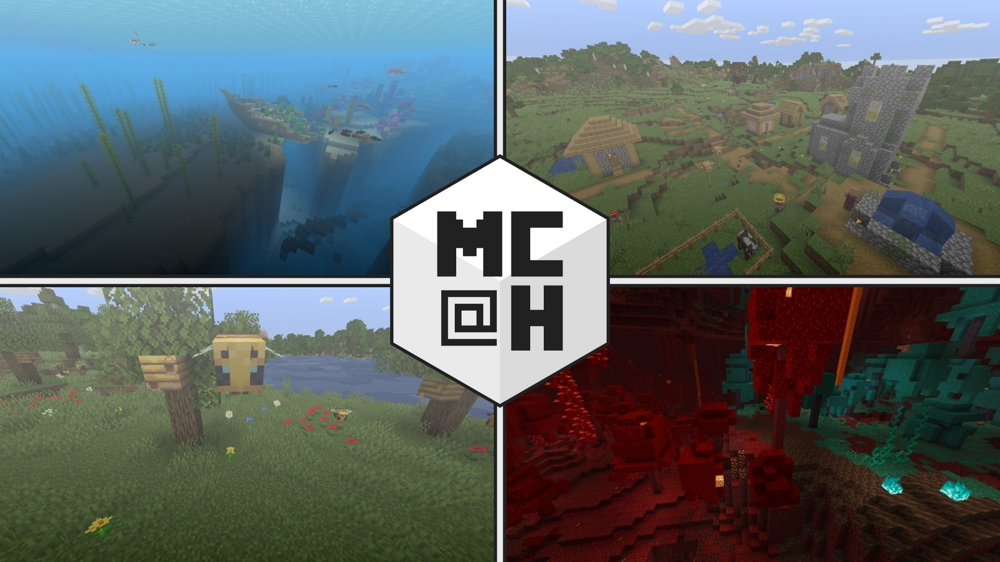

<!DOCTYPE html>
<html lang="en">
  <head>
	<meta name="viewport" content="width=device-width, initial-scale=1.0">
	<meta charset="utf-8">
	<meta name="page_type" content="np-template-header-footer-from-plugin">
	
	<!--Website information-->
	<title>Projects - Minecraft@Home</title>
	<meta name="description" content="Within the past year, many of Minecraft's most famous seeds have been discovered by our community.">
	<meta name="keywords" content="MinecraftAtHome, Minecraft@Home, seed finding, minecraft, packpng">
	<meta name="url" content="https://minecraftathome.com/">

	<!--Open Graph meta tags-->
	<meta property="og:site_name" content="Minecraft@Home"> <!--Website name-->
	<meta property="og:title" content="Projects - Minecraft@Home"> <!--Page title-->
	<meta property="og:description" content="Within the past year, many of Minecraft's most famous seeds have been discovered by our community.">
	<meta property="og:image" content="images/mch-icon-inverted.svg">
	<meta property="og:image:alt" content="Minecraft@Home white logo">
    <!--FIX THIS ONE WHEN THE PAGES ARE SET UP CORRECTLY-->
	<meta property="og:url" content="https://minecraftathome.com/projects/list.html">
	<meta property="og:type" content="website">
	<meta property="og:locale" content="en_US">

	<!--Twitter meta tags-->
	<meta name="twitter:card" content="summary_large_image">
	<meta name="twitter:title" content="Projects - Minecraft@Home">
	<meta name="twitter:description" content="Within the past year, many of Minecraft's most famous seeds have been discovered by our community.">
	<meta name="twitter:image" content="images/mch-wordmark-invertedwithlink_2040px.png">
	<meta name="twitter:image:alt" content="Full white version of the Minecraft@Home logo with a yellow link to minecraftathome.com">
	<meta name="site" content="@minecraftathome">

	<!--Main link that search engines should use-->
    <!--FIX THIS ONE WHEN THE PAGES ARE SET UP CORRECTLY-->
	<link rel="canonical" href="https://minecraftathome.com/projects/list.html">	
	<!--Let search engines follow links and index the whole page-->
	<meta name="robots" content="index, follow">

	<!--Apple settings-->
	<meta name="apple-mobile-web-app-capable" content="yes">
	<meta name="apple-mobile-web-app-status-bar-style" content="black">

	<link rel="stylesheet" href="nicepage.css" media="screen">
	<link rel="stylesheet" href="list.css" media="screen">
	<script class="u-script" type="text/javascript" src="jquery.js" defer=""></script>
	<script class="u-script" type="text/javascript" src="nicepage.js" defer=""></script>
	<meta name="generator" content="Nicepage 3.3.7, nicepage.com">
	<link rel="icon" href="images/favicon.png">
	<link id="u-theme-google-font" rel="stylesheet" href="https://fonts.googleapis.com/css?family=Roboto:100,100i,300,300i,400,400i,500,500i,700,700i,900,900i%7COpen+Sans:300,300i,400,400i,600,600i,700,700i,800,800i">

	<!--Schema Markup Website/Organization information-->
	<script type="application/ld+json">
		{
		  "@context": "https://schema.org",
		  "@type": "Organization",
		  "name": "Minecraft@Home",
		  "alternateName": "MinecraftAtHome",
		  "url": "https://minecraftathome.com/",
		  "logo": "images/mch-icon-inverted.svg",
		  "sameAs": [
			"https://youtube.com/MinecraftAtHome",
			"https://minecraftathome.com/",
			"https://twitter.com/minecraftathome"
		  ]
		}
  </head>

  <body class="u-body"><header class="u-clearfix u-header u-palette-5-dark-3 u-header" id="sec-d764"><div class="u-clearfix u-sheet u-sheet-1">
		<a href="about.html" data-page-id="17911896" class="u-image u-logo u-image-1" title="about">
		  
		</a>
		<nav class="u-menu u-menu-dropdown u-offcanvas u-menu-1" data-responsive-from="SM">
		  <div class="menu-collapse" style="font-size: 1rem; letter-spacing: 0px; font-weight: 700; text-transform: uppercase;">
			<a class="u-border-2 u-border-active-palette-1-base u-border-hover-palette-1-base u-border-no-left u-border-no-right u-border-no-top u-button-style u-custom-left-right-menu-spacing u-custom-padding-bottom u-custom-top-bottom-menu-spacing u-nav-link u-text-active-palette-1-base u-text-hover-white" href="#">
			  <svg><use xmlns:xlink="http://www.w3.org/1999/xlink" xlink:href="#menu-hamburger"></use></svg>
			  <svg version="1.1" xmlns="http://www.w3.org/2000/svg" xmlns:xlink="http://www.w3.org/1999/xlink"><defs><symbol id="menu-hamburger" viewBox="0 0 16 16" style="width: 16px; height: 16px;"><rect y="1" width="16" height="2"></rect><rect y="7" width="16" height="2"></rect><rect y="13" width="16" height="2"></rect>
</symbol>
</defs></svg>
			</a>
		  </div>
		  <div class="u-custom-menu u-nav-container">
			<ul class="u-nav u-spacing-30 u-unstyled u-nav-1"><li class="u-nav-item"><a class="u-border-2 u-border-active-palette-1-base u-border-hover-palette-1-base u-border-no-left u-border-no-right u-border-no-top u-button-style u-nav-link u-text-active-palette-1-base u-text-hover-white" href="about.html" style="padding: 10px 0px;">About Us</a>
</li><li class="u-nav-item"><a class="u-border-2 u-border-active-palette-1-base u-border-hover-palette-1-base u-border-no-left u-border-no-right u-border-no-top u-button-style u-nav-link u-text-active-palette-1-base u-text-hover-white" href="list.html" style="padding: 10px 0px;">List of Projects</a><div class="u-nav-popup"><ul class="u-h-spacing-20 u-nav u-unstyled u-v-spacing-10 u-nav-2"><li class="u-nav-item"><a class="u-button-style u-nav-link u-white" href="beta-panorama.html">Beta Panorama</a>
</li><li class="u-nav-item"><a class="u-button-style u-nav-link u-white" href="packpng.html">Pack.PNG</a>
</li><li class="u-nav-item"><a class="u-button-style u-nav-link u-white" href="skull-painting.html">Skull Painting</a>
</li><li class="u-nav-item"><a class="u-button-style u-nav-link u-white" href="1-13-1-16-panoramas.html">1.13-1.16 Panoramas</a>
</li><li class="u-nav-item"><a class="u-button-style u-nav-link u-white" href="herobrine.html">Herobrine</a>
</li><li class="u-nav-item"><a class="u-button-style u-nav-link u-white" href="smash-backgrounds.html">Smash Backgrounds</a>
</li><li class="u-nav-item"><a class="u-button-style u-nav-link u-white" href="official-trailer.html">Official Trailer</a>
</li><li class="u-nav-item"><a class="u-button-style u-nav-link u-white" href="tallcactus.html">Tallest Cactus</a>
</li></ul>
</div>
</li></ul>
		  </div>
		  <div class="u-custom-menu u-nav-container-collapse">
			<div class="u-black u-container-style u-inner-container-layout u-opacity u-opacity-95 u-sidenav">
			  <div class="u-sidenav-overflow">
				<div class="u-menu-close"></div>
				<ul class="u-align-center u-nav u-popupmenu-items u-unstyled u-nav-3"><li class="u-nav-item"><a class="u-button-style u-nav-link" href="about.html" style="padding: 10px 0px;">About Us</a>
</li><li class="u-nav-item"><a class="u-button-style u-nav-link" href="list.html" style="padding: 10px 0px;">List of Projects</a><div class="u-nav-popup"><ul class="u-h-spacing-20 u-nav u-unstyled u-v-spacing-10 u-nav-4"><li class="u-nav-item"><a class="u-button-style u-nav-link" href="beta-panorama.html">Beta Panorama</a>
</li><li class="u-nav-item"><a class="u-button-style u-nav-link" href="packpng.html">Pack.PNG</a>
</li><li class="u-nav-item"><a class="u-button-style u-nav-link" href="skull-painting.html">Skull Painting</a>
</li><li class="u-nav-item"><a class="u-button-style u-nav-link" href="1-13-1-16-panoramas.html">1.13-1.16 Panoramas</a>
</li><li class="u-nav-item"><a class="u-button-style u-nav-link" href="herobrine.html">Herobrine</a>
</li><li class="u-nav-item"><a class="u-button-style u-nav-link" href="smash-backgrounds.html">Smash Backgrounds</a>
</li><li class="u-nav-item"><a class="u-button-style u-nav-link" href="official-trailer.html">Official Trailer</a>
</li><li class="u-nav-item"><a class="u-button-style u-nav-link" href="tallcactus.html">Tallest Cactus</a>
</li></ul>
</div>
</li></ul>
			  </div>
			</div>
			<div class="u-black u-menu-overlay u-opacity u-opacity-70"></div>
		  </div>
		</nav>
	  </div></header>
	<section class="u-align-left u-clearfix u-image u-shading u-section-1" data-image-width="1600" data-image-height="813" id="sec-1d6c">
	  <div class="u-clearfix u-sheet u-valign-top u-sheet-1">
		<h1 class="u-text u-text-1">Our&nbsp;<span class="u-text-palette-4-light-1">Projects</span>
		</h1>
		<p class="u-large-text u-text u-text-variant u-text-2">Within the past year, many of Minecraft's most famous seeds have been discovered by our community.</p>
	  </div>
	</section>
	<section class="u-clearfix u-section-2" id="sec-7c15">
	  <div class="u-clearfix u-sheet u-sheet-1">
		<h2 class="u-text u-text-1">Ongoing Projects</h2>
		<div class="u-expanded-width u-list u-repeater u-list-1">
		  <div class="u-container-style u-list-item u-repeater-item" data-href="smash-backgrounds.html" data-page-id="96415324">
			<div class="u-container-layout u-similar-container u-container-layout-1">
			  
			  <h3 class="u-text u-text-2">'Smash' Backgrounds</h3>
			  <div class="u-border-1 u-border-grey-dark-1 u-expanded-width u-line u-line-horizontal u-line-1"></div>
			  <p class="u-text u-text-3">Steve has been added to Super Smash, now it's time for us to uncover the origins of the six different background images.</p>
			  <a href="smash-backgrounds.html" data-page-id="96415324" class="u-border-1 u-border-black u-border-hover-palette-2-base u-btn u-btn-rectangle u-button-style u-none u-text-body-color u-text-hover-palette-2-base u-btn-1">learn more</a>
			</div>
		  </div>
		  <div class="u-container-style u-list-item u-repeater-item" data-href="official-trailer.html" data-page-id="52636550">
			<div class="u-container-layout u-similar-container u-container-layout-2">
			  
			  <h3 class="u-text u-text-4">Minecraft Trailer</h3>
			  <div class="u-border-1 u-border-grey-dark-1 u-expanded-width u-line u-line-horizontal u-line-2"></div>
			  <p class="u-text u-text-5">One of the most iconic Minecraft video ever.&nbsp; Now we want to remake it scene-by-scene.</p>
			  <a href="official-trailer.html" data-page-id="52636550" class="u-border-1 u-border-black u-border-hover-palette-2-base u-btn u-btn-rectangle u-button-style u-none u-text-body-color u-text-hover-palette-2-base u-btn-2">learn more</a>
			</div>
		  </div>
		  <div class="u-container-style u-list-item u-repeater-item" data-href="tallcactus.html" data-page-id="20106390">
			<div class="u-container-layout u-similar-container u-container-layout-3">
			  
			  <h3 class="u-text u-text-6">Tallest Cactus</h3>
			  <div class="u-border-1 u-border-grey-dark-1 u-expanded-width u-line u-line-horizontal u-line-3"></div>
			  <p class="u-text u-text-7">What's the tallest cactus that can naturally occur in Minecraft? The tallest one we've found so far is over 20 blocks.</p>
			  <a href="tallcactus.html" data-page-id="20106390" class="u-border-1 u-border-black u-border-hover-palette-2-base u-btn u-btn-rectangle u-button-style u-none u-text-body-color u-text-hover-palette-2-base u-btn-3">learn more</a>
			</div>
		  </div>
		</div>
	  </div>
	</section>
	<section class="u-clearfix u-section-3" id="carousel_2799">
	  <div class="u-clearfix u-sheet u-sheet-1">
		<h2 class="u-text u-text-default u-text-1">Completed Projects</h2>
		<div class="u-list u-repeater u-list-1">
		  <div class="u-container-style u-list-item u-repeater-item u-list-item-1" data-href="herobrine.html" data-page-id="305391488">
			<div class="u-container-layout u-similar-container u-container-layout-1">
			  
			  <h3 class="u-text u-text-2">The 'Herobrine' World</h3>
			  <div class="u-border-1 u-border-grey-dark-1 u-expanded-width u-line u-line-horizontal u-line-1"></div>
			  <p class="u-text u-text-3">What lies beyond the fog? Now, over a decade since the original Herobrine screenshot was posted, the world seed has been uncovered.</p>
			  <a href="#" class="u-border-1 u-border-black u-border-hover-palette-2-base u-btn u-btn-rectangle u-button-style u-none u-text-body-color u-text-hover-palette-2-base u-btn-1">learn more</a>
			</div>
		  </div>
		  <div class="u-container-style u-list-item u-repeater-item u-list-item-2" data-href="beta-panorama.html" data-page-id="648923401">
			<div class="u-container-layout u-similar-container u-container-layout-2">
			  
			  <h3 class="u-text u-text-4">Main Menu Panorama</h3>
			  <div class="u-border-1 u-border-grey-dark-1 u-expanded-width u-line u-line-horizontal u-line-2"></div>
			  <p class="u-text u-text-5">This panorama graced the menu screen for over seven years.&nbsp; The discovery of this world seed was Minecraft@HOME's first major project.</p>
			  <a href="#" class="u-border-1 u-border-black u-border-hover-palette-2-base u-btn u-btn-rectangle u-button-style u-none u-text-body-color u-text-hover-palette-2-base u-btn-2">learn more</a>
			</div>
		  </div>
		  <div class="u-container-style u-list-item u-repeater-item u-list-item-3" data-href="packpng.html" data-page-id="2825928582">
			<div class="u-container-layout u-similar-container u-container-layout-3">
			  
			  <h3 class="u-text u-text-6">Pack.PNG</h3>
			  <div class="u-border-1 u-border-grey-dark-1 u-expanded-width u-line u-line-horizontal u-line-3"></div>
			  <p class="u-text u-text-7">Pack.PNG is perhaps the most-viewed Minecraft image ever.&nbsp; Now, thanks to thousands of BOINC volunteers, this iconic hill can be visited once again.</p>
			  <a href="#" class="u-border-1 u-border-black u-border-hover-palette-2-base u-btn u-btn-rectangle u-button-style u-none u-text-body-color u-text-hover-palette-2-base u-btn-3">learn more</a>
			</div>
		  </div>
		  <div class="u-container-style u-list-item u-repeater-item u-list-item-4" data-href="skull-painting.html" data-page-id="876114525">
			<div class="u-container-layout u-similar-container u-container-layout-4">
			  
			  <h3 class="u-text u-text-8">Skull-on-Fire World</h3>
			  <div class="u-border-1 u-border-grey-dark-1 u-expanded-width u-line u-line-horizontal u-line-4"></div>
			  <p class="u-text u-text-9">Have you ever noticed the terrain in the background of Minecraft's in-game skull painting? The world seed for this mountain was found in September.</p>
			  <a href="#" class="u-border-1 u-border-black u-border-hover-palette-2-base u-btn u-btn-rectangle u-button-style u-none u-text-body-color u-text-hover-palette-2-base u-btn-4">learn more</a>
			</div>
		  </div>
		  <div class="u-container-style u-list-item u-repeater-item u-list-item-5" data-href="1-13-1-16-panoramas.html" data-page-id="64218799">
			<div class="u-container-layout u-similar-container u-container-layout-5">
			  
			  <h3 class="u-text u-text-10">1.13-1.16 Backgrounds</h3>
			  <div class="u-border-1 u-border-grey-dark-1 u-expanded-width u-line u-line-horizontal u-line-5"></div>
			  <p class="u-text u-text-11">Following up on our previous work, we've recently discovered the seeds for all four remaining menu backgrounds, up through release 1.16.</p>
			  <a href="#" class="u-border-1 u-border-black u-border-hover-palette-2-base u-btn u-btn-rectangle u-button-style u-none u-text-body-color u-text-hover-palette-2-base u-btn-5">learn more</a>
			</div>
		  </div>
		</div>
	  </div>
	</section>
	<section class="u-align-center u-clearfix u-white u-section-4" id="sec-b8ec">
	  <div class="u-clearfix u-sheet u-sheet-1">
		<h2 class="u-text u-text-default u-text-1">Join our Discord and other social media!</h2>
		<a href="about.html#sec-d4a0" data-page-id="17911896" class="u-align-center u-btn u-button-style u-palette-4-dark-1 u-btn-1">View Our Links</a>
	  </div>
	</section>
	<section class="u-align-center u-clearfix u-white u-section-5" id="sec-7521">
	  <div class="u-clearfix u-sheet u-sheet-1">
		<h2 class="u-text u-text-body-color u-text-1">Contribute your computing power with BOINC!</h2>
		<a href="about.html#carousel_b67b" data-page-id="17911896" class="u-align-center u-btn u-button-style u-palette-4-dark-1 u-btn-1">Click for more Info</a>
	  </div>
	</section>
	
	<footer class="u-align-left-xs u-clearfix u-footer u-palette-5-dark-3" id="sec-13e0"><div class="u-clearfix u-sheet u-sheet-1">
		<p class="u-align-center u-text u-text-default u-text-1">Copyright © 2021 Minecraft@HOME<br>This website is not affiliated with Mojang, the developers of Minecraft.<br>
		</p>
	  </div></footer>
  </body>
</html>
